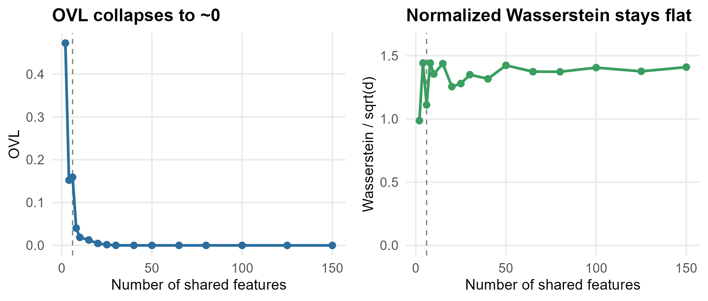

library(keRnel)
library(BayesOmics)This only matters when you want a single, global number summarizing
many shared features at once – a per-feature or univariate comparison
never runs into dimentionality . You want that single number to rank (or
threshold) how different two groups are, and it needs to stay meaningful
as the number of shared features d grows.
ovl_metric() and wasserstein_metric() behave
in opposite ways on that axis.
The general formulas
The Overlapping Coefficient is, for any two densities
f1, f2:
the total probability mass the two distributions share – bounded in
[0, 1] by construction, regardless of d.
ovl_metric() evaluates this in closed form for two Gaussian
posteriors with proportional covariance.
The 2-Wasserstein distance between two Gaussians
N(mu1, Sigma1), N(mu2, Sigma2) (what
wasserstein_metric() computes) has the closed form (Dowson
& Landau, 1982; Olkin & Pukelsheim, 1982):
Unbounded, and it grows with d, so we use a normalized
version:
which stays close to a stable distance, instead of collapsing (like
OVL) or growing without bound (like the un-normalized
W_2).
Same effect, growing feature count
Fixed per-feature effect (diff_group = 0.8), simulated
(real, noisy data, not a closed-form population computation) at
nb_id from 2 to 150, each point averaged over 10
simulations:

OVL collapses toward 0 within the first ~30 features; the renormalized Wasserstein settles into a stable band around 1.3-1.4 for every feature count above that.
Calling it in practice
Below about 6 shared features,
ovl_metric() is fine; above it,
compute_group_diff() with
per_feature_metric(wasserstein_metric(), power = 0.5):
set.seed(42)
kern_true <- variance_kernel(variance = 10) * se_kernel(length_scale = 15)
kern_full <- kern_true + white_noise_kernel(noise = 5)
data <- simu_db_kernel(kernel = kern_true, nb_id = 15, nb_group = 2, nb_sample = 20,
diff_group = 0.8, var_sample = 5, range_input = c(0, 300),
integer_input = TRUE, input_grid = TRUE)
posterior <- posterior_mean(data, kern_full, mu_0 = mean(data$Output), lambda_0 = 1)
compute_group_diff(posterior, ovl_metric())
#> 1 2
#> 1 1.000000000 0.003419882
#> 2 0.003419882 1.000000000
compute_group_diff(posterior, per_feature_metric(wasserstein_metric(), power = 0.5))
#> 1 2
#> 1 0.000000 1.347277
#> 2 1.347277 0.000000group_diff(posterior) automates exactly this 6-feature
rule (see ?group_diff, id_threshold) –
everywhere else in the package’s documentation, that is the entry point
used by default, with no metric picked by hand. Reach for the explicit
calls above only when you want to override that default, compare metrics
side by side (as here), or tune the threshold itself.
Takeaways
- OVL’s boundedness and its dimension-sensitivity are the same fact
seen two ways: it is a probability computed from a distance that grows
with
d. - Wasserstein’s unboundedness is the flip side: renormalized by
sqrt(d), it never saturates, which is exactly what makes it usable oncedgets large.